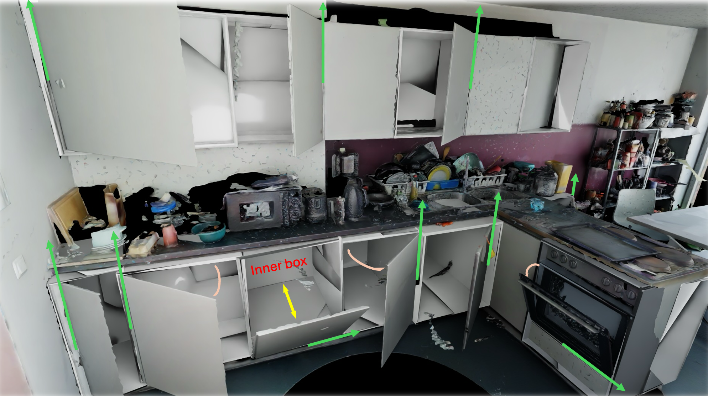
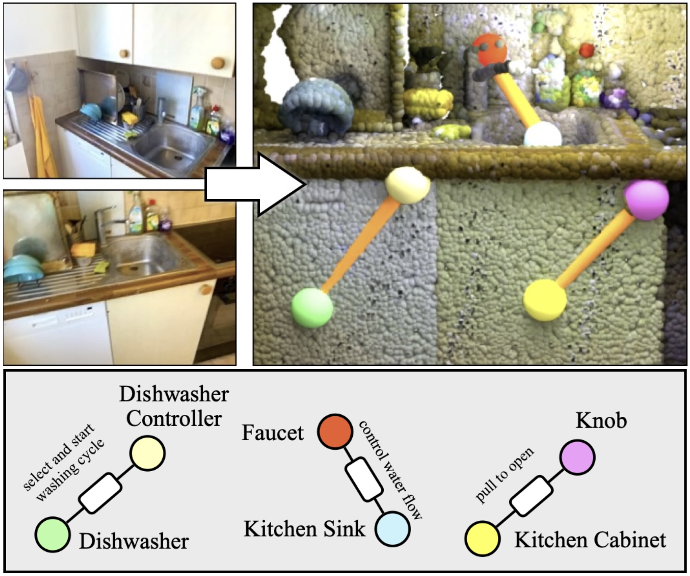
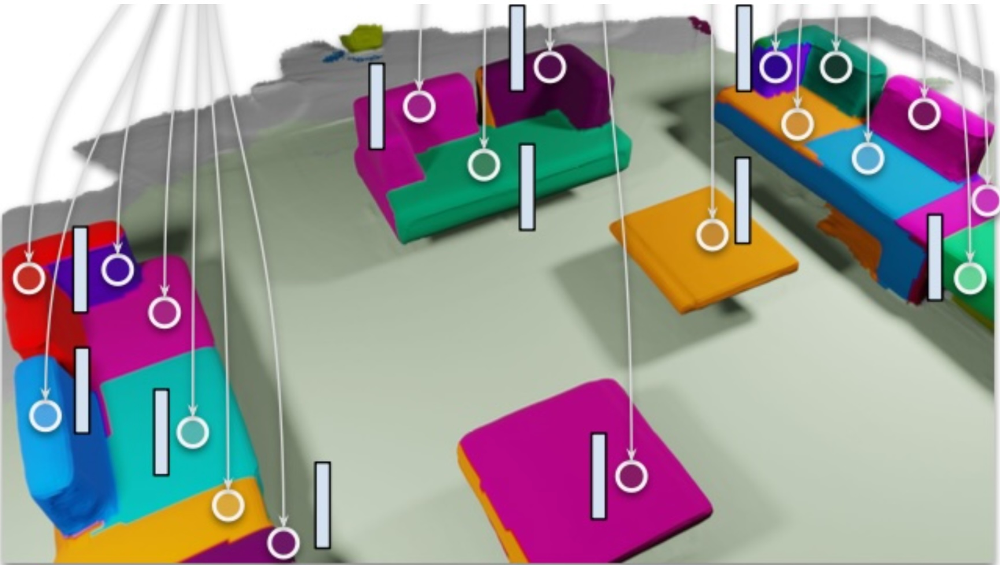
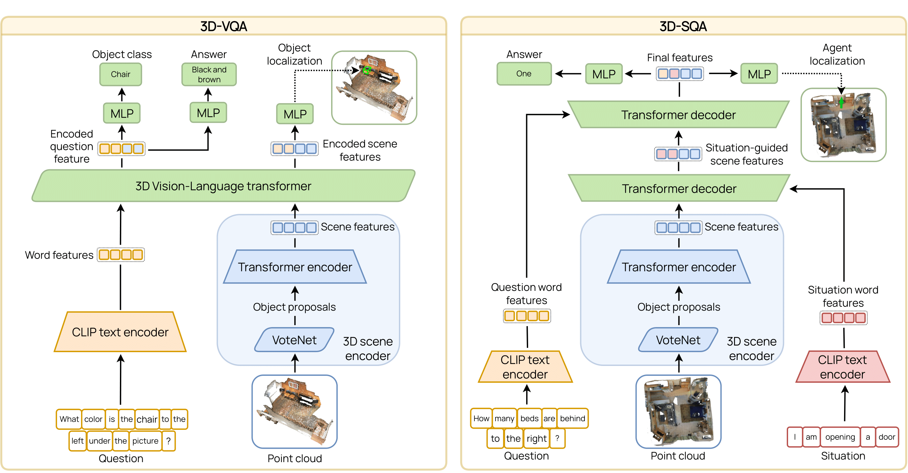
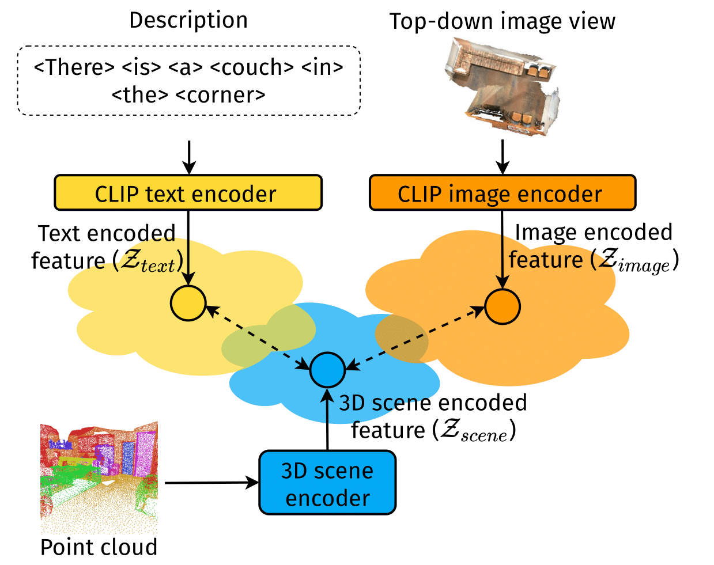
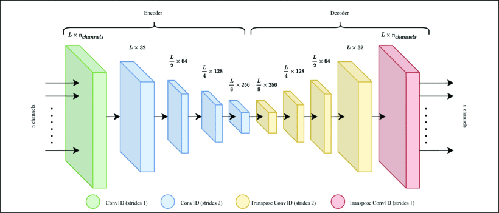

Alexandros Delitzas (Alex Delitzas)
I am a PhD student at ETH Zurich and Max Planck Institute for Informatics, advised by Prof. Marc Pollefeys (ETH) and Prof. Christian Theobalt (MPI), and supported by the Max Planck ETH Center for Learning Systems (CLS). I am interested in 3D Computer Vision, particularly in the areas of 3D/4D scene understanding and reconstruction.
Previously, I obtained my MSc in Computer Science at ETH Zurich, specializing in machine learning and computer vision. During my studies, I conducted research projects with the Computer Vision and Geometry Group led by Prof. Marc Pollefeys, the Data Analytics Lab led by Prof. Thomas Hofmann and the Computer Vision Lab led by Prof. Luc Van Gool.
Prior to that, I was an undergraduate student in Electrical and Computer Engineering at the Aristotle University of Thessaloniki, where I worked with Prof. Andreas Symeonidis and Prof. Panagiotis Petrantonakis.
For any inquiries, feel free to reach out!
News
- Feb. 2026 — Our work FunREC was accepted at CVPR '26 in Denver.
- Jan. 2026 — Our work REACT3D was accepted at RA-L.
- May 2025 — I was recognized as outstanding reviewer for CVPR '25.
- Mar. 2025 — Our work OpenFunGraph was accepted at CVPR '25 as a Highlight.
- Jan. 2025 — Our work Search3D was accepted at RA-L.
- Dec. 2024 — The fourth iteration of our Open-Vocabulary 3D Scene Understanding Workshop will be held in conjunction with CVPR '25 in Nashville.
- Sep. 2024 — I started my PhD at ETH Zurich and I joined the Max Planck ETH Center for Learning Systems as a doctoral fellow.
- Apr. 2024 — Our work SceneFun3D was accepted at CVPR '24 in Seattle as an Oral presentation.
- Dec. 2023 — The second iteration of our Open-Vocabulary 3D Scene Understanding Workshop will be held in conjunction with CVPR '24 in Seattle.
- Oct. 2023 — Our work Multi-CLIP was accepted at BMVC '23 in Aberdeen as an Oral presentation.
Publications
* indicates equal contribution, † indicates (co-)mentored student

Alexandros Delitzas, Chenyangguang Zhang, Alexey Gavryushin, Tommaso Di Mario, Boyang Sun, Rishabh Dabral, Leonidas Guibas, Christian Theobalt, Marc Pollefeys, Francis Engelmann, Daniel Barath
IEEE/CVF Conf. on Computer Vision and Pattern Recognition (CVPR), 2026
@InProceedings{delitzas2026funrec,
author = {Alexandros Delitzas and Chenyangguang Zhang and Alexey Gavryushin and Tommaso Di Mario and Boyang Sun and Rishabh Dabral and Leonidas Guibas and Christian Theobalt and Marc Pollefeys and Francis Engelmann and Daniel Barath},
title = {Reconstructing Functional 3D Scenes from Egocentric Interaction Videos},
booktitle = {IEEE/CVF Conf. on Computer Vision and Pattern Recognition (CVPR)},
year = {2026},
}
Zhao Huang†, Boyang Sun, Alexandros Delitzas, Jiaqi Chen, Marc Pollefeys
IEEE Robotics and Automation Letters (RA-L), 2026
@InProceedings{huang2026react3d,
author = {Zhao Huang and Boyang Sun and Alexandros Delitzas and Jiaqi Chen and Marc Pollefeys},
title = {REACT3D: Recovering Articulations for Interactive Physical 3D Scenes},
booktitle = {IEEE Robotics and Automation Letters (RA-L)},
year = {2026},
}
Chenyangguang Zhang†, Alexandros Delitzas, Fangjinhua Wang, Ruida Zhang, Xiangyang Ji, Marc Pollefeys, Francis Engelmann
IEEE/CVF Conf. on Computer Vision and Pattern Recognition (CVPR), 2025
@InProceedings{zhang2025openfungraph,
author = {Chenyangguang Zhang and Alexandros Delitzas and Fangjinhua Wang and Ruida Zhang and Xiangyang Ji and Marc Pollefeys and Francis Engelmann},
title = {Open-Vocabulary Functional 3D Scene Graphs for Real-World Indoor Spaces},
booktitle = {IEEE/CVF Conf. on Computer Vision and Pattern Recognition (CVPR)},
year = {2025},
}
Ayca Takmaz, Alexandros Delitzas, Robert Sumner, Francis Engelmann, Johanna Wald, Federico Tombari
IEEE Robotics and Automation Letters (RA-L), 2025
@InProceedings{takmaz2025search3d,
author = {Ayca Takmaz and Alexandros Delitzas and Robert Sumner and Francis Engelmann and Johanna Wald and Federico Tombari},
title = {Search3D: Hierarchical Open-Vocabulary 3D Segmentation},
booktitle = {IEEE Robotics and Automation Letters (RA-L)},
year = {2025},
}
Alexandros Delitzas, Ayca Takmaz, Federico Tombari, Robert Sumner, Marc Pollefeys, Francis Engelmann
IEEE/CVF Conf. on Computer Vision and Pattern Recognition (CVPR), 2024
@InProceedings{delitzas2023scenefun3d,
author = {Alexandros Delitzas and Ayca Takmaz and Federico Tombari and Robert Sumner and Marc Pollefeys and Francis Engelmann},
title = {SceneFun3D: Fine-Grained Functionality and Affordance Understanding in 3D Scenes},
booktitle = {IEEE/CVF Conf. on Computer Vision and Pattern Recognition (CVPR)},
year = {2024},
}
Alexandros Delitzas*, Maria Parelli*, Nikolas Hars, Georgios Vlassis, Sotirios Anagnostidis, Gregor Bachmann, Thomas Hofmann
Proc. of the British Machine Vision Conference (BMVC), 2023
@InProceedings{delitzas2023multi,
author = {Alexandros Delitzas and Maria Parelli and Nikolas Hars and Georgios Vlassis and Sotirios Anagnostidis and Gregor Bachmann and Thomas Hofmann},
title = {Multi-CLIP: Contrastive Vision-Language Pre-training for Question Answering tasks in 3D Scenes},
booktitle = {Proc. of the British Machine Vision Conference (BMVC)},
year = {2023},
}
Maria Parelli*, Alexandros Delitzas*, Nikolas Hars, Georgios Vlassis, Sotirios Anagnostidis, Gregor Bachmann, Thomas Hofmann
Proc. of the IEEE/CVF Conference on Computer Vision and Pattern Recognition Workshops (CVPRW), 2023
@InProceedings{Parelli_2023_CVPR,
author = {Maria Parelli and Alexandros Delitzas and Nikolas Hars and Georgios Vlassis and Sotirios Anagnostidis and Gregor Bachmann and Thomas Hofmann},
title = {CLIP-Guided Vision-Language Pre-Training for Question Answering in 3D Scenes},
booktitle = {Proc. of the IEEE/CVF Conference on Computer Vision and Pattern Recognition Workshops (CVPRW)},
year = {2023},
}Alexandros Delitzas, Kyriakos Chatzidimitriou, Andreas Symeonidis
International Journal of Human-Computer Studies (IJHCS), 2023
@InProceedings{DELITZAS2023103019,
author = {Alexandros Delitzas and Kyriakos Chatzidimitriou and Andreas Symeonidis},
title = {Calista: A deep learning-based system for understanding and evaluating website aesthetics},
booktitle = {International Journal of Human-Computer Studies (IJHCS)},
year = {2023},
}
Christodoulos Kechris*, Alexandros Delitzas*, Vasileios Matsoukas*, Panagiotis Petrantonakis
International Conference of the IEEE Engineering in Medicine & Biology Society (EMBC), 2021
@InProceedings{9630585,
author = {Christodoulos Kechris and Alexandros Delitzas and Vasileios Matsoukas and Panagiotis Petrantonakis},
title = {Removing Noise from Extracellular Neural Recordings Using Fully Convolutional Denoising Autoencoders},
booktitle = {International Conference of the IEEE Engineering in Medicine & Biology Society (EMBC)},
year = {2021},
}